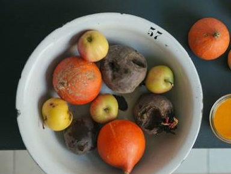

Answer your body's needs
The way ingredients are sourced affects the way we nourish our bodies. Author Mark Schatzer believes our body naturally develops an appetite for the foods and nutrients it needs to be healthy, but that artificial flavourings are getting in the way. This can be reversed by focusing on high-quality ingredients and being mindful as your appetite guides you to consume according to your body's needs.
Be Mindful
Sourcing local or organic food is a good way to start being more mindful about what you're cooking and eating.